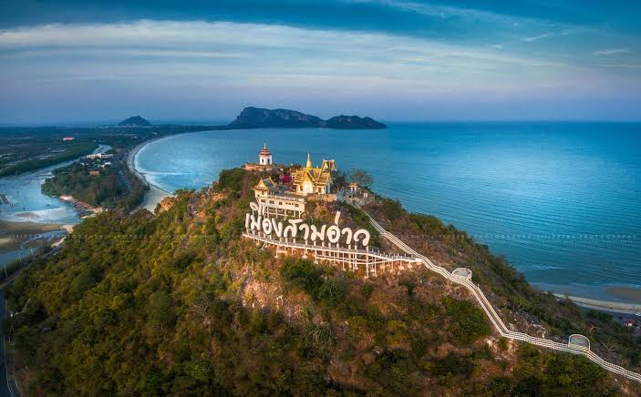

วางแผนเที่ยวประจวบคีรีขันธ์ 1 วัน
ตัวอย่างการจัดตารางเที่ยวให้ครบทั้งสถานที่สำคัญและธรรมชาติ

สัมผัสความสวยงามของจุดชมวิวเมืองสามอ่าว จังหวัดประจวบคีรีขันธ์
ช่วงเช้า
08.00 น. เดินทางไปศาลหลักเมืองประจวบคีรีขันธ์
09.30 น. ไปชมวิวที่เขาช่องกระจก
ช่วงกลางวัน
12.00 น. รับประทานอาหารกลางวันและชิมอาหารทะเล
ช่วงบ่าย
14.00 น. เดินเล่นและพักผ่อนที่อ่าวมะนาว
16.00 น. ชมวิวทะเลและถ่ายภาพเป็นที่ระลึก
สิ่งที่ควรเตรียม
- โทรศัพท์มือถือ
- หมวกและครีมกันแดด
- น้ำดื่ม
- เงินสด
- กล้องถ่ายรูป